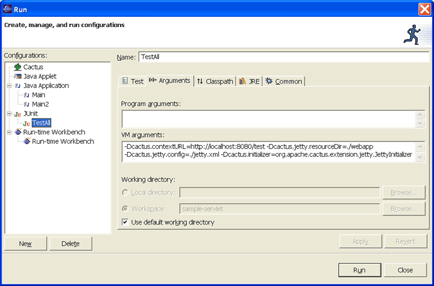

|
|
| Apache > Jakarta > Cactus > Running Tests | Docs for: v1.7.2 | v1.7 Last update: March 26 2006 |
Forewords and RequirementsThis page explains how to run Cactus tests with the Jetty servlet container. You will need the single Jetty jar, and if you are using JSPs you will also need the Jasper jars. Setting up Jetty
The idea is to use the
In order to use the TestSetup, you need to wrap your test suite in
public class TestJettyAll extends TestCase
{
public static Test suite()
{
TestSuite suite = new TestSuite();
suite.addTestSuite(MyTestClass1.class);
[...]
suite.addTestSuite(MyTestClassN.class);
return new JettyTestSetup(suite);
}
You can configure the Jetty TestSetup either programatically or with system properties:
In both cases, the value set programatically takes precendence over the value of the corresponding system property.
If you're using JSPs you'll need to add the Jasper jars to your
runtime Classpath (in addition to the Jetty jar).
Example 1: Running from Ant
Let's assume we have a JUnit task that launches the tests.
We need to add the Jetty jar and optionally the Jasper jars
(if we use JSPs) to the runtime classpath. Then, all we have
to do is add the correct VM arguments to configure
the
<junit>
[...]
<jvmarg value="-Dcactus.contextURL=http://localhost:${test.port}/test"/>
<jvmarg value="-Dcactus.jetty.resourceDir=${src.webapp.dir}"/>
<jvmarg value="-Dcactus.jetty.config=${src.webapp.dir}/test/jetty.xml"/>
<classpath>
[...]
<!-- Include Jetty jar and optionally Jasper jars in the classpath -->
<pathelement location="${jetty.jar}"/>
<pathelement location="${jasper-compiler.jar}"/>
<pathelement location="${jasper-runtime.jar}"/>
</classpath>
<test name="org.apache.cactus.sample.TestJettyAll"/>
</junit>
Example 2: Running from an IDEAgain all you have to do is add the correct VM arguments, and the Jetty and Jasper jars, to the JUnit launch. For example in Eclipse you would add the jars, and create a JUnit launch configuration as below:

|